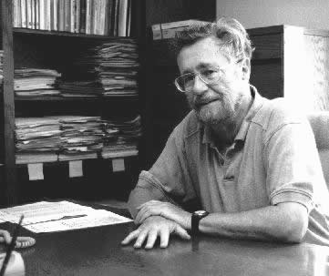

Λίγα λόγια για τον Edsger Dijkstra
Ο Edsger Dijkstra ήταν ενα απο τα άτομα που συμμετείχαν δυναμικά στην καθιέρωση των αρχών της Επιστήμης Υπολογιστών. Το έργο του περιλαμβάνει συνεισφορές σε πολλούς τομείς της επιστήμης, οπως στον τομεα των Αλγορίθμων και των Λειτουργικών Συστημάτων. Πόλλες σημαντικές εννοίες και προβλήματα που βρίσκονται πλέον στην καθιερωμένη ορολογία της πληροφορικής, αποδώθηκαν για πρώτη φορα απο τον Dijkstra. Ακόμα, θεωρουσε σημαντικό να κατανοήσουμε πως θα πρεπεί να διδάσκεται η Επιστήμη Υπολογίστων ωστε οι φοιτητές να έχουν την βελτίστη ανάπτυξη, τοσο ακαδημαικά οσο και στην παραγωγή λογισμικού. Το έργο του αναγνωρίστηκε σε παγκόσμιο επίπεδο, με αποτέλεσμα να κερδίσει πόλλες επιβραβευσεις και τίτλους. Σημαντικότερη διάκριση για τον Dijkstra ηταν η επιβραβευσή του με το Turing Award.